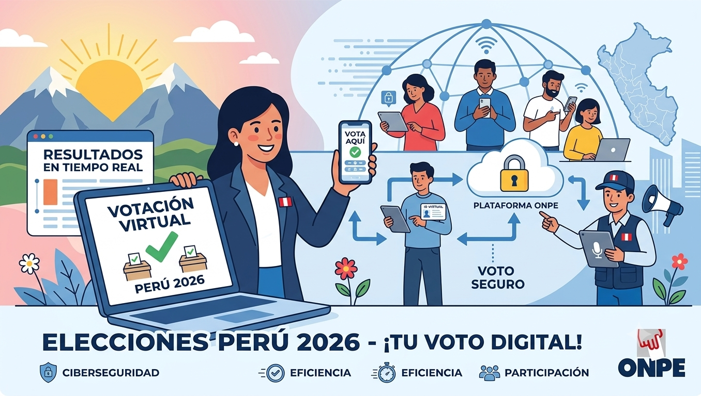

Voto electrónico
Esta página web se desarrollo para simular las elecciones presidenciales del Perú 2026 y donde todas las personas podrán hacer seguimiento de los resultados.

¿Qué elegiremos en esta Elección Presidencial 2026?
Presidente
1Vicepresidente
2Senadores
60Diputados
130Parlamento Andino
5Revisa las indicaciones
Elecciones Generales 2026: ¿Quiénes votan?
Todos los peruanos mayores de 18 años inscritos en el padrón electoral que cuenten con su DNI vigente (físico o electrónico), acceso a internet y que se hayan registrado previamente en la plataforma oficial de la ONPE dentro del plazo establecido. Si no te registraste a tiempo, no podrás votar en línea.
¿Se puede votar desde cualquier celular o computadora, o necesito un equipo especial?
Puedes votar desde cualquier smartphone, tablet o computadora con conexión estable a internet. Solo necesitas un navegador web seguro (como Google Chrome o Safari). Si el sistema requiere validar tu identidad con el chip de tu DNI electrónico, tu celular necesitará tener tecnología NFC (la misma que se usa para pagar sin contacto).
¿Qué pasa si mi DNI está caducado o lo perdí días antes de la elección?
Para votar virtualmente tu DNI debe estar vigente. Si lo perdiste, deberás tramitar un duplicado de emergencia en el RENIEC. Si el sistema detecta que los datos de tu documento no coinciden con el padrón actualizado, los accesos de votación se bloquearán por seguridad.
¿Cómo sabe el sistema que realmente soy yo quien está votando y no otra persona?
El sistema cuenta con una validación de identidad de tres pasos: Ingresar tu número de DNI y el código de verificación del documento. Validación biométrica facial (una foto en vivo con la cámara de tu celular) o el uso de la clave secreta (PIN) de tu DNI electrónico. Un código único temporal enviado por SMS o correo electrónico que expira en 5 minutos.
¿El gobierno o la ONPE sabrán por quién voté? ¿Mi voto sigue siendo secreto?
El voto es 100% secreto. El sistema utiliza un mecanismo llamado "encriptación asimétrica". Imagínalo como una caja fuerte: el sistema registra que ya votaste (para que no lo hagas dos veces), pero separa inmediatamente tus datos personales de la opción que elegiste. Nadie puede vincular tu nombre con tu voto.
¿Qué pasa si un hacker ataca la página web el día de las elecciones?
La plataforma corre sobre servidores seguros y descentralizados que cuentan con protección avanzada contra ataques de saturación (DDoS). Además, cada voto se registra con una tecnología que impide cualquier modificación posterior. Si un intento de hackeo ocurre, los sistemas de respaldo mantienen la votación activa sin perder los datos ya ingresados.
¿Cómo es el paso a paso para emitir mi voto en la pantalla?
El proceso es intuitivo y simula la cédula física: Inicias sesión y pasas el control de identidad. Verás la pantalla para elegir Presidente. Presionas sobre el símbolo o la foto de tu preferencia y marcas "Siguiente". Aparecerá el resumen de tu elección para que verifiques que todo está correcto. Si estás conforme, presionas "Confirmar Voto". Una vez que le das click a confirmar, el voto es enviado y ya no se puede cambiar.
¿Qué pasa si me equivoco al presionar la pantalla? ¿Puedo corregirlo?
Sí, totalmente. Antes del paso final, el sistema te mostrará una pantalla de "Resumen de tu Elección". Si notas que marcaste un partido por error, puedes presionar el botón "Cambiar o Corregir" para regresar a la cédula virtual y corregir tu opción.
¿Se puede votar en blanco o viciado de forma virtual?
Sí. En la cédula virtual aparecerán claramente los botones de "Voto en Blanco" y "Voto Nulo/Viciado". Si decides no elegir a ningún candidato, puedes marcar esas opciones y continuar el proceso con normalidad.
¿Qué pasa si se me va el internet o se me apaga el celular en medio de la votación?
No pierdes tu derecho. Si no habías presionado "Confirmar Voto", el proceso se cancela automáticamente. Cuando recuperes la conexión o cargues tu celular, puedes volver a ingresar a la plataforma, pasar la validación de identidad y votar desde el principio. Tu voto solo se cuenta si completaste todo el proceso hasta ver la constancia.
Si ya voté de manera virtual, ¿puedo ir a mi local de votación física a votar otra vez?
No. Al registrarte para el voto virtual, eres retirado automáticamente del padrón de las mesas físicas. Si acudes a un colegio, los miembros de mesa verán en el sistema que ya figuras como "Voto Electrónico Emitido/Registrado" y no te permitirán ingresar un voto en el ánfora física.
¿Qué pasa si alguien me obliga o me paga para votar por alguien frente a mi computadora?
Coaccionar o comprar votos es un delito electoral. Si te encuentras en una situación de riesgo, la plataforma incluye un botón de "Alerta de Seguridad / Voto Bajo Coacción" que invalida discretamente la sesión de manera segura para que puedas denunciar el hecho ante el Jurado Nacional de Elecciones (JNE) o la fiscalía.
¿Cómo sé que mi voto realmente se registró correctamente?
Al finalizar tu votación, la plataforma emitirá una Constancia Digital de Sufragio con un código QR único y una firma digital de la ONPE. Este documento se enviará automáticamente a tu correo electrónico registrado y sirve como tu comprobante oficial de que cumpliste con tu deber cívico.
Tengo más de 70 años, ¿estoy obligado a votar virtualmente?
En el Perú, el voto para ciudadanos mayores de 70 años es facultativo (voluntario). Si decides registrarte para el voto virtual, puedes hacerlo; pero si decides no participar, no se te generará ninguna multa por omisión al sufragio.
¿Si no voto de manera virtual me cobran multa? ¿Cómo la pago?
Sí, si te registraste en esta modalidad y no emitiste tu voto antes del cierre de la plataforma, se te aplicará la multa correspondiente por omisión, tal como ocurre en el sistema tradicional. La multa se procesará a través del sistema habitual del JNE y podrás pagarla en el Banco de la Nación o vía Págalo.pe.
Emitir voto
Importante
Para poder emitir su voto necesita registrar su cuenta, donde colocará datos para confirmar que es un ser humano y para aumentar el realismo de las elecciones presidenciales Perú 2026. Los datos ingresados estan sujetos a terminos y condiciones donde ponemos como pilar indispensable la seguridad de los mismos.